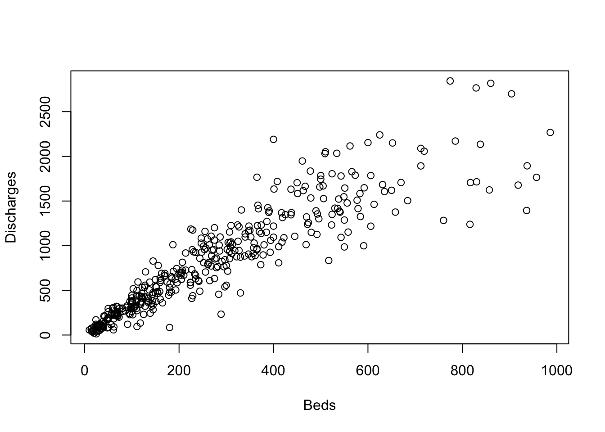

Practical 1-1: Introduction to R
This practical will introduce you to working with R as a
statistical programming and analysis language, as well as going through
the basics of how to use the RStudio editor which is a
convenient and helpful interface to R.
You will be familiar with the basics of programming with Python, but there are some important differences between R and Python. Additionally, R has a lot more support for statistics in terms of the functions, data plotting, and packages that are available.
If you’re also taking Data Science & Statistical Computing 2, then you may already be familiar with much of this introductory material - feel free to skip over sections that you already know and have a go at the ‘Additional Exercises’ at the end.
You should make sure you complete up to and including Section 5 before moving on.
- New R techniques:
- Basic R skills with arithmetic, functions, etc
- Manipulating and creating vectors:
c,seq, - Calculating data summaries:
mean,sd,var,min,max - Plotting a scatterplot with
plot, a histogram withhist, and a boxplot withboxplot. - Customising plots with labels, titles, colour, etc.
1 Getting Started
R is an open source programming language for statistical computing and graphics that is widely used among statisticians for data analysis. As R is a programming language and not a program itself (like Excel) we will need some programming skills, as even the simplest data analysis will require writing and evaluating small fragments of code to carry out the analysis we require. To make life easier, we will be using RStudio as an interface to write, edit, and evaluate our R code.
1.1 RStudio
Hopefully you will have installed your own copy of R and RStudio, or have opened it using the AppHub or AppsAnywhere. If not, check the instructions here.
- Launch RStudio! (We won’t be using the R program directly; RStudio will take care of that for us)
- Download the Practical Script file by Right-clicking on the link
below and saving the file to somewhere accessible. The script file
contains the same practical instructions as this webpage, but in a form
that is viewable and editable as an
Rfile. - Now open the script file in RStudio, either by going File > Open and selecting the file, or by dragging and dropping the file into Rstudio.
You’ll now see that the default RStudio environment is divided in 4 panels, with the default arrangement illustrated below. Going anticlockwise, the four panels are: Code; Console; Plots, Help, and Files; and Workspace and History.
If you want to rearrange which panes go where, go to the Options dialog Tools > Options menu on Windows (RStudio > Preferences on a Mac). You’ll find a ‘Panes’ tab where you can rearrange the layout to your preference.

Code Editor – the main editor for your R code. This should contain the practical script file that you have just downloaded and opened. This pane is hidden at first, however when you load or start a new R script file it will be displayed. R code can be entered here, and it provides support such as auto-complete using
[Tab], colour highlighting, and additional buttons and menu items to help edit and evaluate your code. In particular, a single line of code (or any selected block of code) can be evaluated in one go by typing[Ctrl]+[Enter]([Cmd]+[Enter]for a Mac), and the whole file can be evaluated with[Ctrl]+[Shift]+[S]([Cmd]+[Shift]+[S]for a Mac).R Console – this pane is where your code from the Editor is evaluated by R. You can also use the console here to execute quick calculations that you don’t need to save. Commands entered in the Console tab are immediately executed by R, and the results displayed on the following line. In this way, R can be used as a simple calculator by typing directly into the Console window. However, for more complex calculations with many steps it is preferable to write the code in a script file using the Code pane first, and then evaluate it in the Console. Note: when in the Console pane, you can use the (up arrow) and (down arrow) keys to navigate through previous commands (e.g. to correct mistakes).
Plots, Help, and Files – this pane has multiple roles indicated by the tabs along its top. The Plots tab will show the results of any plots you produce in R, as well as buttons to save, clear, and backtrack through previous plots. The Help tab is where RStudio will display any built-in help files. The Files tab provides a simple file viewer to quickly navigate between and open files.
Workspace and History – this pane has two functions, also indicated by tabs. The Environment tab lists all the variables you have currently available in this session of R, along with their types and values. The History tab shows a list of all the R commands you have evaluated in the console.
For more detailed help on the RStudio programming environment, see the RStudio cheatsheet.
1.2 First steps
When we just want to do small and quick calculations, we can type R commands directly into the console window. These commands will be evaluated immediately and the answer returned on the next line.
Let’s try some simple arithmetic:At the > prompt in the console you can type numerical
expressions as you would into a calculator, hit [Enter] and
R will print the answer.
R can be used as a calculator to perform the usual simple arithmetic operations. The operators are:
+addition-subtraction*multiplication/division^raise to the power (alternatively**also works)%%modulus, e.g.5 %% 3is2%/%integer division, e.g.5 %/% 3is1
Many standard mathematical functions are also available:
abs(x)- the absolute value ofxsqrt(x)- the square root ofxlog(x)- the natural logarithm ofx(uselog10for base-10)exp(x)- the exponential ofx, i.e. \(e^x\).sin(x),cos(x),tan(x)- the sine, cosine, and tangent
- Experiment using the R Console to evaluate simple arithmetic expressions. For example, find the sum and difference of 45.23 and 3.59, and the square root of 7.
- When you’re comfortable with how simple commands work, proceed to the next question.
When we want to save the code for our calculations or the calculation is long and requires many steps, its better to write the code in a script file in the Editor pane. Then, when the code is ready, we can evaluate it either line-by-line, or all in one go.
- In the script file, use the gap below to write the
Rcommand to find \(\sum_{i=1}^5 i^i\). - There are many ways to evaluate the code. Rather than re-typing in
the console, or copy/pasting the code,
RStudiogives us some shortcuts. - First, position the text cursor on the line with the code and:
- Click the
Runbutton at the top of the Editor window to execute the current line - Move the cursor back to the line of code and press
[Ctrl]+[Enter]
- Click the
In both cases, the line of code is copied to the console and
evaluated, and the cursor advances to the next line of executable code.
Pressing [Ctrl]+[Enter] will step through your code one
line at a time, which is useful to find any bugs. Alternatively, to run
multiple lines at once simply highlight the lines you want to run and
click Run or press [Ctrl]+[Enter]. We can also
save and evaluate an entire script file by pressing
[Ctrl]+[Shift]+[S]. This is useful when you’ve finished a
long calculation and don’t want to step through it line-by-line.
2 Variables and Vectors
During an R session we work with and create variables. Variables can
be a scalars, vectors, matrices, functions, or lists. In order to create
a new object we use the assign symbol <-, although one
can often use = instead. For example, to create the object
a with a value of 2 we can type:
a <- 2or
a = 2R has many variables and functions available by default, and many many more that can be downloaded using special libraries.
For each of these standard objects R provides online help, which can
be dislpayed in the Help window. To access this help type ?
followed immediately by the name of the object in question.
- R stores the value of \(\pi\) in a
constant called
pi.- Display the value of \(\pi\) by
evaluating
piin the console. - Use the
?to bring up the help forpi(you don’t need to read it)
- Display the value of \(\pi\) by
evaluating
Vectors are the most basic type of variable in R, and all numerical
variables are created as vectors - even scalars are vectors of length 1.
Formally, R stores a vector as an ordered list numbers, and
R contains many linear algebra tools that allow us to
perform basic vector calculus (one of the many reasons why
R is preferred to Excel).
The object you have just created, a, is a vector of
length 1. When you type a and press [Enter]
you will see the following output (without the ##):
## [1] 2The [1] is a number indicating which element of the vector starts the current line. In this example this is unnecessary as we only have a vector of length one. However, if we consider a bigger vector, such as the integers from 1 to 50:
## [1] 1 2 3 4 5 6 7 8 9 10 11 12 13 14 15 16 17 18 19 20 21 22 23 24 25
## [26] 26 27 28 29 30 31 32 33 34 35 36 37 38 39 40 41 42 43 44 45 46 47 48 49 50we can see that the vector covers multiple lines, the second line begins with element 24 of the vector, and the final line begins at element 47.
The most basic way to create a vector is to use th c
function to ‘combine’ several values of the same type into
a vector. For example,
x <- c(1,2,3)
R provides some simple functions for quickly creating numerical vectors.
We can use the colon : operator to create integer
sequences between two values and return the result as a vector:
y <- 1:10
Vectors can also be combined with the c function:
z <- c(x,y)
The seq function also generates a vector containing a
sequence between its two arguments from and
to, but is more sophisticated than :. We can
dictate the length of the sequence by supplying the optional
length argument, or the step size in the sequence by
passing a value to the by argument. If we supply neither
length nor by, then seq gives an
integer sequence like :.
y <- seq(1,9) ## same as 1:9
seq(1,10,length=25) ## sequence of given length
seq(15,45,by=3) ## sequence of given step
See the RHelp on vectors for more information.
Using the techniques above:
- Create the vector \((2, 4, 6)\) in
Rand call itv1. - Create the same vector using the object
athat you defined before, and without typing the numbers 4 or 6. Hint: multiplication also works for evey element in a vector. - Create a vector containing all of the integers from 1 to 100.
- Create a vector containing the sequence of odd numbers between 0 and 100.
- Create a vector containing your forename, middle names (if any), and surname as a string. Hint: A string is simply some text surrounded by the quotation marks “text” or ‘text’.
Assigning names to the objects you create is very important so that they can be re-used. To edit or repeat previous commands in the console, we can simply press the (up arrow) and the (down arrow) keys to navigate through previous commands (e.g. to correct mistakes). However, it is often much easier to use the Editor, rather than the console, to debug any problems.
3 Loading data
Most real data will have to be imported into R from an
external data file, or will be provided by a library or package. For
these practicals, we have already tidied and processed the data, so we
just need to load the data file.
Download data: hospital
First, right-click and save the data from the link above to the same place as your practical script file. Then you can load the file by any of the following methods (in descending order of difficulty):
- dragging and dropping it into the Console panel of Rstudio
- locating it using the Files panel of Rstudio and then clicking on the file
- or with the
loadfunction and give it the path to the file as an argument
This will create a hospital data set object in R for you
to use in the following.
You should now view the data either in the console by typing
hospitalor in a spreadsheet layout with the View function:
View(hospital)To see a brief description of the data set and its variables, see this page.
4 Data frames
A data frame which is a two-dimensional table of data (like
a matrix) where each column contains values of one variable, and each
row contains one set of values from each observation. Each column is
labelled with a variable name, and the values within each column must be
of the same type but the types of data held in each column can differ
according to the type of variable it represents. The data set
hospital that we have just loaded is a data frame.
The rows and columns of data frames can be extracted as vectors
allowing us to easily perform calculations of summary statistics, for
example. In the hospital data, we see that the data
contains 3 columns each with different names.
We can extract individual columns from a data frame by using the
variable name and the dollar-sign $. For example, to
extract the beds column from hospital we would
type:
hospital$beds
We can extract a vector containing all of the column names for a
given data frame using the names function:
names(hospital)
- Use the
namesfunction to extract the names of the variables in the hospital data. - Create new vectors called
bedsanddiscscontaining the data for the number of beds, and number of discharges in the hospital data respectively.
When a vector represents numerical data, there are a number of standard functions that will be useful for any statistical calculations:
sumsums all values in the vectormeancomputes the sample mean, i.e. \(\frac{1}{n} \sum_{i=1}^n x_i\). Note that if given a data matrix,meanwill average all elements rather than computing the sample mean vector.mediancomputes the sample median valueminandmaxcompute the sample minimum and maximumrangecomputes the min and max values.varandsdcompute the sample variance and standard deviation, i.e. \(s^2=\frac{1}{n-1} \sum_{i=1}^n (x_i-\bar{x})^2\) for single variables.varwill produce the sample variance matrix if supplied with a data matrix.quantilecomputes the min, max, median, and lower and upper quartiles. Other quantiles can be computed using theprobsargumentsummarycalculates the min, max, mean, median, and quantiles.
- Compute the mean, standard deviation and range (max - min) of the discharges data.
5 Simple plots
One of R’s greatest strengths is the facility it
provides for producing effective graphics. In the following tasks we
will use some of the key plotting tools to study the
hospital data.
The plot function produces a scatterplot of its two
arguments. Suppose we have saved our \(x\) coordinates in a vector a,
and our \(y\) coordinates in a vector
b, then to draw a scatterplot of \((x,y)\) we type
plot(x=a, y=b)
If the argument labels x and y are not
supplied, R will assume the first argument is x
and the second is y. If only one vector of data is
supplied, this will be taken as the \(y\) value and will be plotted against the
integers 1:length(y), i.e. in the sequence in which they
appear in the data.
All of the standard plot functions can be customised by passing additional arguments to the function. For instance, we can add a plot title and axis labels by supplying optional arguments:
main- provides a title to display at the top of the plotxlab- provides a label for the horizontal axisylab- provides a label for the vertical axis
For example,
plot(x=a,y=b, xlab='A', ylab='B', main='Plot of B vs A')
Note: Once a plot has been drawn, it is not possible to
erase any features from it - we can only add extra lines or points to
it. So, if you make a mistake drawing your plot then you’ll need to
start over with a fresh one by calling plot again.
- Produce a scatter-plot of discharges (vertically) against beds
(horizontally) using
plot. The scatterplot will appear in the ‘Plots’ sub-window. - Redraw the plot, labelling the axes
BedsandDischarges. - What do you notice about the relationship?

A histogram
consists of parallel vertical bars that graphically shows the frequency
distribution of a quantitative variable. The area of each bar is
proportional to the frequency of items found in each class. To plot a
histogram, we use the hist function and apply it to a
single vector of data
hist(x)
As with plot, we can use main and
xlab to set the plot title and horizontal axis label.
Histogram also takes a number of arguments specific to the plotting of histograms:
breaks- allows us to control the number of bars in the histogram. Ifbreaksis set to a single number, this will be used to (suggest) the number of bars in the histogram. Ifbreaksis set to a vector, the values will be used to indicate the endpoints of the bars of the histogram. Note:Rinterprets this number as a suggestion only.freq- ifTRUEthe histogram shows the simple frequencies or counts within each bar; ifFALSEthen the histogram shows frequency densities rather than counts.
- Produce a histogram of
dischargesfrom thehospitaldata. - Produce a histogram of the
bedsdata. What do you notice about the two variables? - Increase the number of bars in the discharges histogram. Does this change your perception of the distribution of the discharges data. How about if you decrease the number of cells?
A boxplot provides a graphical view of the median, quartiles,
maximum, and minimum of a data set. A box plot is a bit like a histogram
seen from above. The full name is ‘box and whisker’ plot. The ‘box’
shows the middle 50% of the observations, from the first to the third
quartile. Inside the box, the line shows the median (which is the second
quartile). The ‘whiskers’ show the full range of the data, although in
R there is the possibility of excluding outliers, which
appear as individual points.
To draw a boxplot of a single variable we simply pass the data
directly to the boxplot function:
boxplot(x)
To draw multiple boxplots within the same plot, we can pass multiple
vectors separated by commas as arguments
(e.g. boxplot(x,y,z)). We can even pass an entire dataframe
to the boxplot function, and it will draw boxplots of all the columns
within a single plot.
- Draw a boxplot of the discharges data. Compare this to the Histogram of discharges.
- Draw a boxplot of the beds and discharges data on the same y-axis using the boxplot function only once.
5.1 Advanced plots
When performing a statistical analysis it is important that you make your graphics informative as possible. This will aid you, as the statistician, in spotting relation- ships and performing the analysis, and will aid those to whom the analysis is going to be communicated. Often this involves adding simple things like colour or tweak- ing some of the default settings of the plotting region. In other cases we might plot things together to facilitate easy comparison. We’ll now explore some simple ways of improving the plots we constructed earlier.
- Read the help page on using colour in plots and experiment with redrawing your scatterplot using colour for the points.
- Now try changing the plot symbols to something that you think looks best.
- Read up about using the
parfunction to combine multiple plots.- Divide the plotting region into two panes (one on top of the other).
- Now redraw the histogram of discharges above of the histogram of
beds from the
hospitaldata. Does this make comparison of the distributions easier?
6 Additional exercises
6.1 How long is a movie?
Download data: movies
Multivariate statistics inevitably involves working with large data
sets. The effort involved in preparing and making a large dataset usable
for analysis should not be underestimated, but thankfully we’re going to
look at a dataset that has been “prepared earlier”. This
movies data set is reasonably large(ish), containing 24
different attributes of 28819 movies gathered from IMDB. One of the variables is the movie
length in minutes, and it is interesting to look at this variable in
some detail.
In this exercise we’ll use the basic techniques above to investigate the behaviour of the data, and see if we can find (and explain) any interesting features. This process is known as data exploration or exploratory analysis, and is usually the precursor to more formal statistical analyses.
- Download the data from the link above. Then either load the file by
dragging and dropping it into the R console panel of Rstudio, locating
it using the Files panel of Rstudio and clicking, or with the
loadfunction by specifying the file location. - Download load the
moviesdata set, load it into R, and draw a histogram of thelengthvariable. - What features can you see?
- Sometimes it can be useful to expose where exactly the data values
are within the bars of the histogram. For this, we can use a
rugplot using the
rugfunction. Add a rugplot to the histogram - what problems does this highlight? - Let’s try a boxplot of the data - do we learn anything more?
- Are there any movies which differ substantially from all the others (potential outliers)?
- What are the lengths of the two longest movies?
- Do the lengths of these movies seem sensible?
Although it’s tempting to dismiss these as simple errors, it is worth checking if possible.
- Extract the subset of the dataframe containing all the variables for both of these movies
- Inspect the variable values:
- The variables
r1tor10give the percentage of reviews which rated the movie as a1up to a10out of10. Are these movies particularly popular? - What are the names of the movies? Do a quick Google search to see if you can find out more.
- The variables
Incidentally, this data set is no longer up-to-date and there are some even longer films now (though it’s a mystery why.)
Clearly, the extreme values are not representative of most movies and so - for not - let’s ignore them. For exploring the main distribution of movie lengths it makes sense to set some kind of upper limit. Over 99% of the data are less than three hours in length, so let’s restrict ourselve to those.
- Extract the all the movies of length at most three hours.
- Draw a histogram - what do you find?
Useful context:
- The Oscars define a “short film” as anything under 40 minutes.
- Animated shorts are typically between 5 and 8 minutes long, and are counted as individual movies (so, e.g., every ‘Tom and Jerry’ or ‘Mickey Mouse’ cartoon has its own entry).
- Redraw your histogram using a bin-width of 1 minute (you may need to enlarge your plot window).
- What do you see? How does the information above help explain the data?